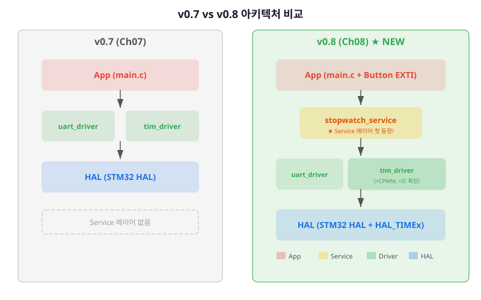
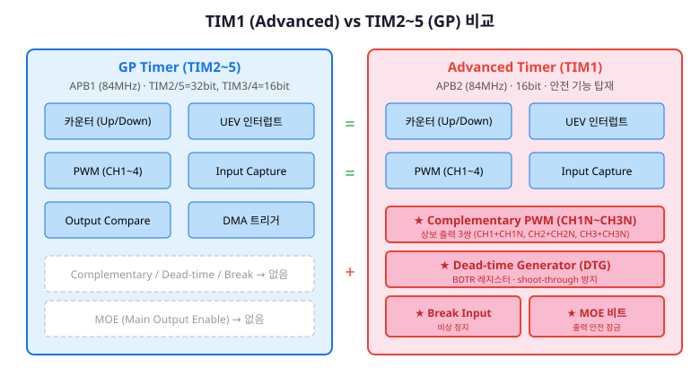
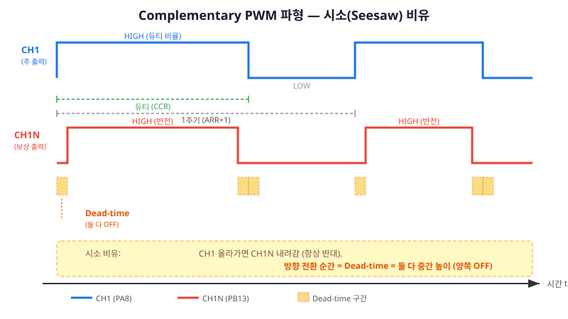
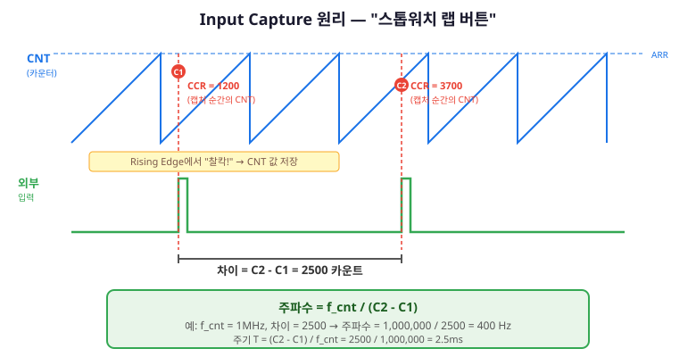
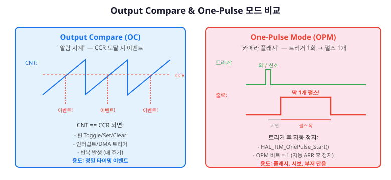
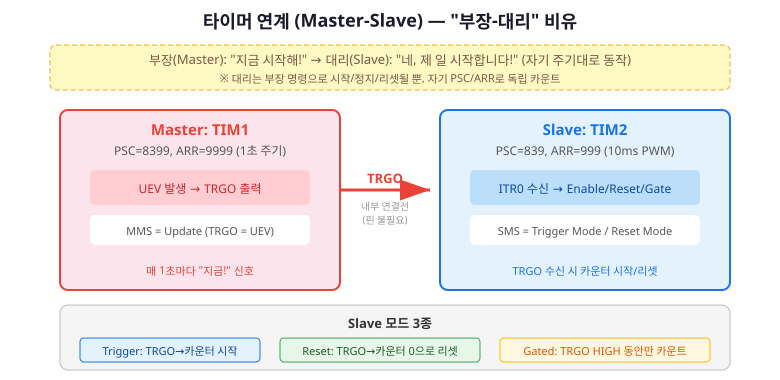

여기까지의 여정을 돌아봅시다.
Ch07에서 TIM2로 정밀 주기 타이머와 PWM을 완성했습니다.
LED가 원하는 밝기로 빛나고, 500ms마다 정확히 콜백이 호출됩니다.
v0.7의 tim_driver — 여러분이 직접 만든 첫 타이머 드라이버입니다.
그런데 현실의 임베디드 시스템은 이보다 훨씬 복잡합니다.
모터를 양방향으로 돌리려면 PWM 하나로는 부족합니다 — 상보 출력(Complementary PWM)이 필요합니다.
외부 신호의 주파수를 측정하려면 타이머를 "입력" 장치로 써야 합니다 — Input Capture입니다.
그리고 가장 중요한 것, Ch03에서 이론으로만 배웠던 FSM(유한 상태 머신)을 드디어 실제 코드로 구현합니다.
이 챕터가 끝나면:
TIM1(Advanced Control Timer)으로 Complementary PWM + Dead-time을 출력합니다.
특히 Service 레이어의 첫 등장이 중요합니다.
지금까지는 App이 Driver를 직접 호출했습니다.
이 챕터에서 처음으로 App → Service → Driver 3단 구조를 구현합니다.
이것이 Ch10(clock_service), Ch11(sensor_service), Ch13(ui_service)의 원형입니다.
이 챕터의 아키텍처 위치
Ch08은 두 가지 아키텍처 변화를 가져옵니다:
① Driver 레이어의 tim_driver를 확장(TIM1 CPWM + IC),
② Service 레이어를 처음으로 실체화(stopwatch_service).

그림 08-1. v0.7 → v0.8 아키텍처 — Service 레이어(stopwatch_service) 첫 등장
인터페이스 설계
Ch08에서 추가되는 API입니다. tim_driver 확장과 stopwatch_service 신설, 두 부분입니다.
[이해] TIM1(Advanced Control Timer)과 GP Timer의 차이를 설명하고, Complementary PWM과 Dead-time의 필요성을 설명할 수 있다.
[적용] TIM1으로 Complementary PWM을 설정하고, Dead-time Generator로 안전한 PWM 출력을 생성할 수 있다.
[적용] Input Capture 모드로 외부 신호의 주파수를 측정하고, Output Compare와 One-Pulse 모드의 개념을 설명할 수 있다.
[분석] 타이머 연계(Master-Slave) 구조를 분석하고, Trigger/Reset/Gated 모드의 차이를 설명할 수 있다.
[창조] Ch03의 FSM 설계 원칙을 적용하여 Stopwatch FSM을 설계하고, Service 레이어에 구현할 수 있다.
프로젝트 v0.8: 이 챕터 완료 후 Complementary PWM + Input Capture + Stopwatch FSM이 동작합니다. Service 레이어의 첫 등장!
§8.1 TIM1 — Advanced Control Timer의 세계
Ch07에서 우리는 TIM2(GP Timer)를 사용했습니다.
타이머 계층 표에서 한 줄이 남아 있었죠 — TIM1, Advanced Control Timer.
"GP 기능 + Complementary PWM + Dead-time"이라고 적혀 있었습니다.
이제 그 한 줄의 의미를 파헤칩니다.
TIM1 vs TIM2~5 — 무엇이 다른가?
핵심 차이는 세 가지입니다:

그림 08-3. TIM1(Advanced) vs TIM2~5(GP) — 파란색은 공통 기능, 빨간색은 TIM1 전용
항목
GP Timer (TIM2~5)
Advanced (TIM1)
버스
APB1 (84MHz)
APB2 (84MHz)
비트
TIM2/5: 32bit, TIM3/4: 16bit
16bit
PWM 채널
CH1~CH4 (단방향)
CH1~CH4 + CH1N~CH3N (상보 출력)
Dead-time
없음
BDTR 레지스터 (DTG 비트 필드)
Break 입력
없음
비상 정지 핀 (BKIN)
MOE 비트
없음
Main Output Enable — 안전 잠금
MOE는 Advanced Control Timer(TIM1)만의 안전 장치입니다.
고전력 모터를 제어할 때 실수로 양쪽이 동시 ON 되면 합선입니다.
그 순간에 모든 출력을 즉시 끌 수 있도록 MOE라는 마스터 스위치를 넣었습니다.
일반용 GP Timer(TIM2~5)는 이런 고전력 제어를 하지 않으니까 없습니다.
"TIM2는 만능 스톱워치, TIM1은 안전장치가 달린 산업용 스톱워치"라고 생각하세요.
기본 사용법(PSC/ARR/CCR, UEV, PWM)은 완전히 동일합니다.
차이는 안전 관련 기능이 추가된 것뿐입니다.
Complementary PWM — "시소(Seesaw)"
비유로 이해하기 시소를 떠올리세요.
한쪽이 올라가면 반대쪽은 반드시 내려갑니다.
절대로 양쪽이 동시에 위에 있을 수 없습니다.
Complementary PWM이 바로 이것입니다 — CH1이 HIGH면 CH1N은 LOW, CH1이 LOW면 CH1N은 HIGH.
그런데 시소가 방향을 바꾸는 그 짧은 순간, 양쪽 다 중간 높이에 있습니다.
이 순간이 Dead-time — 양쪽 FET이 모두 꺼지는 안전 구간입니다.
※ 이 비유의 한계: 실제 시소는 기계적으로 연결되어 반드시 반대로 움직이지만, Complementary PWM은 하드웨어 설정으로 반전이 구현됩니다. 시소의 "중간 순간"은 자연스럽게 발생하지만, Dead-time은 엔지니어가 의도적으로 설정하는 보호 구간입니다.
왜 상보 출력이 필요할까요?
하프 브리지(Half-Bridge) 회로를 생각해 봅시다.
상단 FET과 하단 FET이 번갈아 켜지면서 모터를 양방향으로 구동합니다.
만약 소프트웨어로 두 PWM 채널의 타이밍을 맞추면, 인터럽트 지연으로 둘 다 동시에 켜지는 순간이 발생할 수 있습니다.
전원에서 GND로 직통 — shoot-through.
매우 큰 전류가 흘러 소자가 파괴됩니다.
Complementary PWM은 하드웨어가 자동으로 반전시키므로 이 위험이 없습니다.
Dead-time은 "둘 다 꺼지는 안전 구간"을 하드웨어가 강제 삽입합니다.

그림 08-4. Complementary PWM 파형 — CH1과 CH1N이 반전, Dead-time 구간에서 둘 다 OFF
Dead-time 설정 — "에어록(Airlock)" 안전 구간
에어록(가압 실린더) 원리와도 같습니다.
한쪽 문이 열릴 때 반대쪽 문이 동시에 열리면 기압이 빠져 위험합니다.
따라서 짧은 순간 양쪽 문 모두 닫히는(Dead-time) 안전 구간을 넣습니다.
Complementary PWM의 Dead-time이 바로 이 역할입니다.
FET(트랜지스터)은 꺼지는 데 시간이 걸립니다.
수십~수백 나노초입니다.
CH1이 OFF되는 순간 CH1N이 바로 ON되면, 짧은 순간 둘 다 ON — shoot-through입니다.
Dead-time은 이 전환 구간에 "둘 다 OFF"를 삽입합니다.
STM32의 Dead-time은 BDTR(Break and Dead-Time Register)의 DTG 비트 필드로 설정합니다.
DTG 인코딩은 비선형적이라 직접 계산하기 복잡합니다.
실무에서는 CubeMX의 Dead-time 슬라이더로 ns 단위로 설정하고, 오실로스코프로 확인합니다.
DTG 값 (예시)
Dead-time
84MHz 기준
DTG = 42
42 × T_DTS
500 ns
DTG = 84
84 × T_DTS
1000 ns (1 us)
DTG = 168
(64+40) × 2 × T_DTS
~2.5 us
TIM1 핵심 HAL API
GP Timer와의 핵심 차이는 API 이름에 Ex와 N이 붙는 것입니다:
동작
GP Timer (TIM2)
Advanced (TIM1)
일반 PWM 시작
HAL_TIM_PWM_Start()
동일
보상 PWM 시작
없음
HAL_TIMEx_PWMN_Start()
Dead-time 설정
없음
CubeMX BDTR 또는 HAL_TIMEx_ConfigBreakDeadTime()
/* ch08_01_complementary_pwm.c — Complementary PWM 시작 핵심 코드 */
/* CH1 (주 출력) 시작 — PA8 */
HAL_TIM_PWM_Start(&htim1, TIM_CHANNEL_1);
LOG_I("TIM1 CH1 PWM 시작 (PA8)");
/* CH1N (보상 출력) 시작 — PB13 */
HAL_TIMEx_PWMN_Start(&htim1, TIM_CHANNEL_1);
LOG_I("TIM1 CH1N PWM 시작 (PB13)");
/* 듀티 50% 설정 */
uint32_t arr = __HAL_TIM_GET_AUTORELOAD(&htim1);
uint32_t ccr = (arr + 1) * 50 / 100;
__HAL_TIM_SET_COMPARE(&htim1, TIM_CHANNEL_1, ccr);
LOG_D("CPWM 듀티 50%% (CCR=%lu, ARR=%lu)", ccr, arr);
NUCLEO-F411RE TIM1 핀 배치
TIM1 채널을 NUCLEO 보드에서 사용할 때 핀 충돌에 주의해야 합니다:
채널
핀
Arduino 헤더
충돌 주의
TIM1_CH1
PA8
D7
사용 가능
TIM1_CH1N
PB13
CN10-30
사용 가능
TIM1_CH1N (대안)
PA7
D11
SPI1_MOSI와 충돌!
§8.2 Complementary PWM 실습 — "시소를 만들자"
이론을 확인했으니 직접 파형을 만들어 봅시다.
TIM1으로 1kHz Complementary PWM을 설정하고, Dead-time 1us를 적용합니다.
오실로스코프(또는 느린 주파수로 LED 2개)로 CH1과 CH1N이 반전되는 것을 확인합니다.
오실로스코프 없는 경우: PSC=83999(100Hz), ARR=9999로 설정 후 LED 2개를 PA8/PB13에 연결하면 번갈아 깜빡이는 것을 육안으로 확인할 수 있습니다.
§8.3 Input Capture — "외부 신호를 찰칵 찍다"
Ch07에서 타이머는 출력 장치였습니다 — PWM을 만들어 외부로 내보냈습니다.
이제 관점을 180도 전환합니다.
타이머를 입력 장치로 사용하여 외부 신호의 주기와 주파수를 측정합니다.
이것이 Input Capture(입력 캡처)입니다.
비유로 이해하기 스톱워치의 랩(Lap) 버튼을 떠올리세요.
100m 달리기에서 선수가 지나갈 때마다 버튼을 누르면, 그 순간의 시간이 기록됩니다.
Input Capture는 외부 신호의 엣지(edge)가 발생하는 순간,
카운터(CNT) 값을 CCR에 "찰칵!" 저장합니다.
두 번 "찰칵"한 값의 차이가 곧 주기입니다.
※ 이 비유의 한계: 실제 랩 버튼은 사람이 누르므로 정확도가 낮지만, Input Capture는 하드웨어가 나노초 단위로 정확하게 기록합니다.
Input Capture 원리

그림 08-5. Input Capture — Rising Edge마다 CNT 값을 CCR에 캡처, 차이로 주파수 계산
측정 한계: 16비트 카운터(TIM3)에서 PSC=83(f_cnt = 1MHz)일 때, 최대 카운트 65535에 해당하는 주기는 약 65.5ms이므로 약 15Hz 이하의 주파수는 카운터 오버플로우로 측정 불가능할 수 있습니다. 더 낮은 주파수를 측정하려면 PSC를 높이거나 오버플로우 카운팅을 추가해야 합니다.
Input Capture 구현
/* ch08_02_input_capture.c — IC 주파수 측정 핵심 코드 */
extern TIM_HandleTypeDef htim3;
static volatile uint32_t s_capture_1st = 0;
static volatile uint32_t s_capture_2nd = 0;
static volatile uint8_t s_capture_done = 0;
static volatile uint8_t s_capture_idx = 0;
/* IC 측정 시작 */
void input_capture_start(void)
{
s_capture_idx = 0;
s_capture_done = 0;
HAL_TIM_IC_Start_IT(&htim3, TIM_CHANNEL_1);
LOG_I("Input Capture 시작 (TIM3 CH1, PA6)");
}
/* HAL IC 콜백 — Rising Edge마다 호출 */
void HAL_TIM_IC_CaptureCallback(TIM_HandleTypeDef *htim)
{
if (htim->Instance != TIM3) return;
uint32_t captured = HAL_TIM_ReadCapturedValue(htim, TIM_CHANNEL_1);
if (s_capture_idx == 0) {
s_capture_1st = captured;
s_capture_idx = 1;
} else {
s_capture_2nd = captured;
s_capture_done = 1;
HAL_TIM_IC_Stop_IT(htim, TIM_CHANNEL_1);
}
}
/* 메인 루프에서 결과 확인 */
void input_capture_poll(void)
{
if (!s_capture_done) return;
s_capture_done = 0;
uint32_t diff = (s_capture_2nd >= s_capture_1st)
? s_capture_2nd - s_capture_1st
: (0xFFFF - s_capture_1st) + s_capture_2nd + 1;
LOG_I("주파수 = %lu Hz, 주기 = %lu us",
1000000 / diff, diff);
}
§8.4 Output Compare & One-Pulse — "알람 시계와 카메라 플래시"
타이머의 입출력 모드 "3형제"를 정리합시다.
§8.1~8.2에서 PWM(출력)과 Input Capture(입력)를 배웠습니다.
나머지 두 가지 — Output Compare(출력 비교)와 One-Pulse Mode(원 펄스) — 를 개념 수준으로 살펴봅니다.

그림 08-6. Output Compare("알람 시계") vs One-Pulse("카메라 플래시")
Output Compare — "알람 시계"
PWM과 비슷하지만 목적이 다릅니다.
PWM은 "일정한 듀티의 반복 파형"을 만드는 것이 목적이고,
Output Compare는 "카운터가 CCR에 도달하는 특정 시점"에 이벤트를 발생시키는 것이 목적입니다.
알람 시계가 설정한 시각에 "삐!" 하고 울리듯, 카운터가 CCR 값에 도달하면:
핀을 Toggle/Set/Clear
인터럽트 또는 DMA 트리거 발생
매 주기마다 반복
Ch09(RTC)에서 알람 기능을 구현할 때 이 "특정 시점 이벤트" 개념이 다시 등장합니다.
One-Pulse Mode — "카메라 플래시"
트리거 한 번에 펄스 딱 하나만 나오고 자동 정지합니다.
반복 PWM과 달리 "한 번만 실행"이 필요한 상황에 사용합니다:
카메라 플래시 트리거 (정확한 시간 동안 빛)
서보 모터 위치 지정 (한 번의 펄스로 각도 설정)
부저 단음 발생
/* ch08_03_one_pulse.c — One-Pulse 핵심 코드 */
extern TIM_HandleTypeDef htim4;
void one_pulse_start(void)
{
/* One-Pulse 모드: 트리거 → 지연 → 펄스 1개 → 자동 정지 */
HAL_TIM_OnePulse_Start(&htim4, TIM_CHANNEL_1);
LOG_I("One-Pulse 대기 (TIM4 CH1, PB6)");
LOG_D(" 지연: 3ms, 펄스 폭: 7ms, 총 주기: 10ms");
}
§8.5 타이머 연계 — "부장과 대리의 팀워크"
지금까지 타이머는 각자 독립적으로 동작했습니다.
TIM2는 TIM2의 PSC/ARR로, TIM1은 TIM1의 PSC/ARR로.
하지만 STM32 타이머들은 내부 연결선(ITR)으로 서로 연결되어 있어,
한 타이머의 이벤트가 다른 타이머를 제어할 수 있습니다.
이것이 Master-Slave(마스터-슬레이브) 타이머 연계입니다.
비유로 이해하기 부장과 대리를 떠올리세요.
부장(Master)이 "지금!" 하고 명령하면, 대리(Slave)가 자기 일을 시작합니다.
대리는 자기만의 업무 속도(PSC/ARR)로 일하지만, 시작/정지/리셋은 부장 명령에 따릅니다.
부장은 정기적으로(UEV마다) 명령을 내리고, 대리는 그때마다 자기 일을 수행합니다.
※ 이 비유의 한계: 실제 조직에서는 부장-대리가 양방향 소통하지만, 타이머 Master-Slave는 단방향(Master→Slave)입니다.

그림 08-7. 타이머 연계 — TIM1(Master)이 TRGO로 TIM2(Slave)를 제어
Master-Slave 동작 원리
Master 타이머는 TRGO(Trigger Output) 신호를 생성합니다.
이 신호는 MCU 내부 연결선(ITR)을 통해 Slave 타이머로 전달됩니다.
외부 핀이 필요 없습니다 — 칩 내부에서 직접 연결됩니다.
Slave 타이머는 TRGO를 받아서 세 가지 중 하나를 수행합니다:
Slave 모드
TRGO 수신 시 동작
용도
Trigger
카운터 시작 (Enable)
특정 시점에 타이머 시작
Reset
카운터 0으로 리셋
주기 동기화
Gated
TRGO HIGH 동안만 카운트
특정 구간만 측정
/* ch08_04_master_slave.c — 타이머 연계 핵심 코드 */
extern TIM_HandleTypeDef htim1;
extern TIM_HandleTypeDef htim2;
void master_slave_start(void)
{
/* 순서 중요: Slave 먼저 대기, Master 나중에 시작 */
/* Slave: TIM2 PWM 대기 (Trigger 수신 시 자동 시작) */
HAL_TIM_PWM_Start(&htim2, TIM_CHANNEL_1);
LOG_I("Slave(TIM2) PWM 대기");
/* Master: TIM1 시작 → 1초마다 TRGO 출력 */
HAL_TIM_Base_Start(&htim1);
LOG_I("Master(TIM1) 시작 — 1초마다 TRGO");
LOG_D("TIM1(1s UEV) → TRGO → ITR0 → TIM2(PWM)");
}
TRGO → ITR 매핑 표
"어떤 Master가 어떤 ITR 번호로 Slave에 연결되는가?" — 이 표를 알아야 CubeMX에서 올바르게 설정할 수 있습니다.
Master 타이머
TRGO 연결
Slave가 받는 ITR
TIM1
ITR0
TIM2 / TIM3 / TIM4 / TIM5
TIM2
ITR1
TIM3 / TIM4 / TIM5 (또는 TIM1 역방향)
TIM3
ITR2
TIM4 / TIM5
TIM4
ITR3
TIM5
§8.6 Stopwatch FSM 설계 — "상태 전이표를 직접 그리다"
이 챕터의 핵심 성취 구간에 왔습니다.
Ch03 §3.4에서 FSM의 4요소를 이론으로 배웠습니다 — 상태(State), 전이(Transition), 이벤트(Event), 액션(Action).
Ch06에서 TX_IDLE/TX_BUSY를 암묵적으로 사용했지만, 명시적 FSM 설계 → 구현 → 검증은 지금이 처음입니다.
Ch03에서 자판기 비유를 기억하시나요?
동전을 넣으면 대기 → 선택가능, 버튼을 누르면 선택가능 → 배출.
스톱워치도 같은 구조입니다.
버튼을 누르면 IDLE → RUNNING, 다시 누르면 RUNNING → PAUSED.
같은 FSM 패턴, 다른 도메인입니다.
Step 1: 상태 정의
핸드폰 스톱워치를 관찰하면 세 가지 상태가 보입니다:
상태
enum 값
화면 표시
타이머 상태
IDLE
SW_STATE_IDLE
00:00.000
정지, 시간=0
RUNNING
SW_STATE_RUNNING
숫자 증가 중
동작, 시간 누적
PAUSED
SW_STATE_PAUSED
숫자 멈춤
정지, 시간 유지
Step 2: 이벤트 정의
NUCLEO의 파란 버튼(B1, PC13) 하나로 모든 동작을 수행합니다:
이벤트
enum 값
발생 조건
BTN_SHORT
SW_EVT_BTN_SHORT
버튼 짧게 누름 (<2초)
BTN_LONG
SW_EVT_BTN_LONG
버튼 길게 누름 (≥2초)
Step 3: 상태 전이표 — "빈 칸 채우기"
FSM 설계의 핵심은 상태 전이표입니다.
행은 현재 상태, 열은 이벤트.
모든 칸을 채워야 합니다 — 빈 칸이 곧 버그입니다.
현재 상태 ╲ 이벤트
BTN_SHORT
BTN_LONG
IDLE
→ RUNNING / tim_start, elapsed=0
(무시) 이미 리셋 상태
RUNNING
→ PAUSED / tim_stop, 누적 저장
→ IDLE / tim_stop, elapsed=0
PAUSED
→ RUNNING / tim_start (누적 이어가기)
→ IDLE / elapsed=0
Step 4: 상태 전이도 (FSM 다이어그램)
그림 08-8. Stopwatch FSM — 3개 상태, 버튼 이벤트로 전이, 각 전이에 액션 명시
Step 5: 타이머와 FSM 동기화 설계
각 상태 전이에서 타이머 드라이버를 어떻게 호출하는지 정리합니다:
전이
타이머 제어
시간 처리
IDLE → RUNNING
tim_start()
elapsed=0, tick=0
RUNNING → PAUSED
tim_stop()
elapsed += tick, tick=0
PAUSED → RUNNING
tim_start()
tick=0 (elapsed 유지)
PAUSED → IDLE
(이미 정지)
elapsed=0, tick=0
RUNNING → IDLE
tim_stop()
elapsed=0, tick=0
§8.7 Stopwatch FSM 구현 — "설계를 코드로 옮기다"
§8.6에서 설계를 완료했습니다.
상태 3개, 이벤트 2개, 전이 5개, 각 전이의 액션까지 명확합니다.
이제 코드로 옮깁니다.
그리고 이 코드는 Driver(tim_driver)가 아닌 Service(stopwatch_service)에 위치합니다.
왜 Service 레이어인가?
Ch03에서 배운 4계층 원칙을 복습합시다:
Driver = 하드웨어 추상화. "타이머를 시작/정지/설정" → tim_driver
Service = 비즈니스 로직. "언제 시작하고, 언제 정지하고, 상태를 어떻게 관리할까?" → stopwatch_service
"Driver에 FSM을 넣으면 안 되나요?"
안 됩니다.
Driver에 비즈니스 로직을 넣으면, tim_driver가 스톱워치 전용이 되어 다른 용도(알람, 모터)로 재사용할 수 없습니다.
Driver는 어떤 목적으로든 사용 가능한 범용 인터페이스를 유지해야 합니다.
stopwatch_service.h — 인터페이스
/* ch08_05_stopwatch_service.h — Service 레이어 공개 API */
typedef enum {
SW_STATE_IDLE = 0, /* 초기 상태, 00:00.000 */
SW_STATE_RUNNING = 1, /* 시간 측정 중 */
SW_STATE_PAUSED = 2 /* 일시 정지 */
} sw_state_t;
typedef enum {
SW_EVT_BTN_SHORT = 0, /* 버튼 짧게 누름 (<2초) */
SW_EVT_BTN_LONG = 1, /* 버튼 길게 누름 (≥2초) */
SW_EVT_TICK = 2 /* 타이머 1ms 틱 (내부용) */
} sw_event_t;
typedef struct {
uint32_t total_ms; /* 총 경과 밀리초 */
uint8_t minutes; /* 분 (0~59) */
uint8_t seconds; /* 초 (0~59) */
uint16_t milliseconds; /* 밀리초 (0~999) */
} sw_time_t;
void stopwatch_init(void);
void stopwatch_handle_event(sw_event_t evt);
sw_state_t stopwatch_get_time(sw_time_t *time);
sw_state_t stopwatch_get_state(void);
TIM1(Advanced)은 GP Timer의 모든 기능 + Complementary PWM + Dead-time + Break + MOE를 가진다.
Complementary PWM은 CH1과 CH1N이 항상 반전된 파형을 출력하며, Dead-time은 전환 순간 "둘 다 OFF" 구간을 삽입하여 shoot-through를 방지한다.
Input Capture는 외부 신호의 Rising/Falling Edge 시점에 CNT 값을 CCR에 저장하여 주파수/주기를 정밀 측정한다.
Output Compare는 CNT == CCR 시점에 이벤트를 발생시키고, One-Pulse는 트리거 1회에 펄스 1개를 자동 생성한다.
Master-Slave 연계는 TRGO/ITR 내부 연결을 통해 타이머 간 동기화를 구현한다.
Stopwatch FSM은 IDLE/RUNNING/PAUSED 3개 상태로 구성되며, switch-case 패턴으로 Service 레이어에 구현한다.
Service 레이어는 Driver(하드웨어 추상화) 위에 비즈니스 로직(FSM)을 배치하여 관심사를 분리한다. Driver 재사용성 보장.
아키텍처 업데이트
이 챕터 완료 후 전체 아키텍처에 stopwatch_service(Service)가 추가되고,
tim_driver(Driver)에 CPWM/IC 기능이 확장되었습니다.
그림 08-10. v0.8 아키텍처 현황 — App → Service → Driver → HAL 4계층 실현
연습문제
이해1. TIM1과 TIM2의 차이를 3가지 이상 설명하시오. Dead-time이 없으면 H-브리지에서 어떤 문제가 발생하는지 서술하시오.
적용2. TIM1으로 20kHz Complementary PWM(듀티 60%, Dead-time 500ns)을 설정하시오.
84MHz 클럭 기준으로 PSC, ARR, CCR, DTG 값을 계산하고 CubeMX 설정 과정을 기술하시오.
분석3. GPIO EXTI + HAL_GetTick() 방식과 Input Capture 방식의 주파수 측정을 비교하시오.
정확도, CPU 부하, 측정 가능한 최대 주파수 관점에서 각각의 장단점을 분석하시오.
분석4. Stopwatch FSM에서 PAUSED 상태에서 RESET과 START 이벤트가 거의 동시에 발생하면 어떻게 동작하는가?
이벤트 우선순위 방안을 제시하시오.
창조5. Stopwatch FSM에 Lap(구간 기록) 기능을 추가하시오.
RUNNING 상태에서 두 번째 버튼 누름 시 Lap 기록. 최대 10개 Lap을 배열에 저장하는 코드를 구현하시오.
상태 전이표를 수정하고, 필요한 데이터 구조를 설계하시오.
평가6. "TIM2가 100ms마다 TIM3 One-Pulse 50us를 트리거하는" Master-Slave 구성을 제안하시오.
이 구성의 소프트웨어 대비 장점을 CPU 부하와 타이밍 정확도 관점에서 평가하시오.
다음 챕터 예고
현재 프로젝트는 v0.8 상태로,
정밀 주기 타이머 + PWM + Complementary PWM + Input Capture + Stopwatch FSM까지 구현되었습니다.
스톱워치는 경과 시간을 측정합니다.
하지만 "지금 몇 시 몇 분인가?"라는 절대 시각은 알 수 없습니다.
전원을 끄면 시간이 사라집니다.
다음 Ch09. RTC (Real-Time Clock)에서는
전원이 꺼져도 시간이 유지되는 실시간 시계를 구현하여 프로젝트를 v0.9로 업그레이드합니다.
스톱워치에서 진짜 시계로 — "경과 시간"에서 "절대 시각"으로의 도약입니다.
Alarm FSM도 등장합니다 — Stopwatch FSM과 거의 같은 구조입니다!